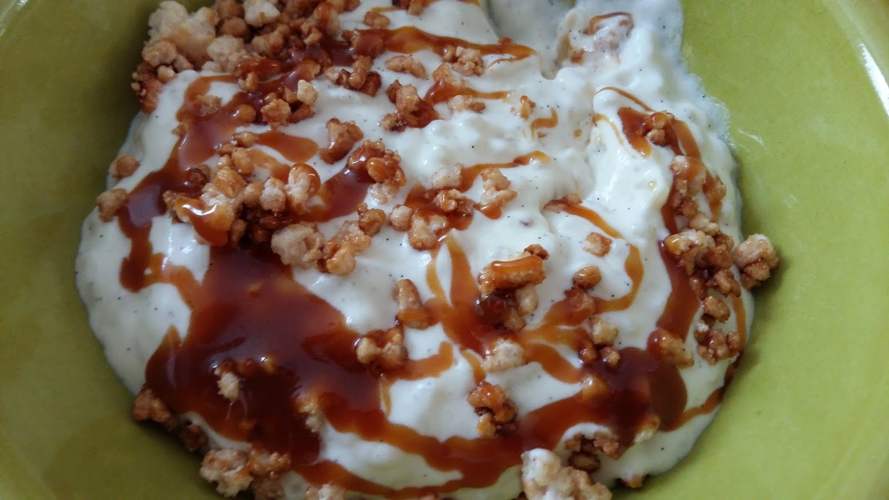

Caramel au beurre salé
⏱️ Préparation : 5 min
🔥 Cuisson : 10 min
❄️ Refroidissement : 1 h



Étapes
- Versez le sucre dans une casserole parfaitement propre puis ajoutez un peu d'eau afin de mieux maîtriser la coloration du caramel.
- Faites chauffer à feu moyen sans remuer jusqu'à obtenir un caramel ambré.
- Pendant ce temps, faites chauffer la crème liquide et coupez le beurre en petits morceaux.
- Retirez la casserole du feu puis ajoutez les morceaux de beurre en remuant avec une maryse. Attention aux projections.
- Versez progressivement la crème chaude tout en mélangeant continuellement jusqu'à obtenir un caramel lisse et crémeux.
- Ajoutez les deux pincées de sel fin et mélangez une dernière fois.
- Versez le caramel dans un bol ou un bocal en verre. Couvrez puis laissez refroidir complètement